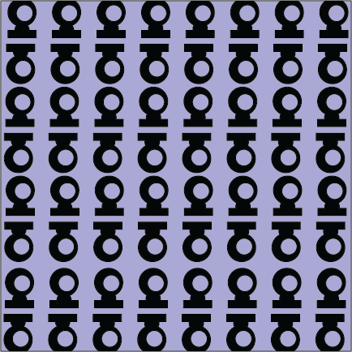

WORK
Persional and school projects


This is a symbol that is made from a circle, that has a hole in it which itself is made by ____ Minus Front, that is conected to a rectangle with anouther smaller circle. It is then put into a group, and then aranged into a grid. Point line plain? What is the goal of the design? What was the assignment
Text to add later